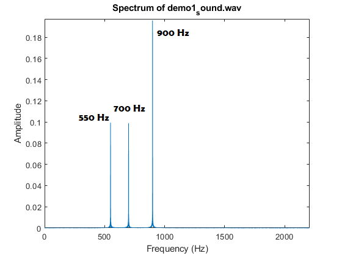
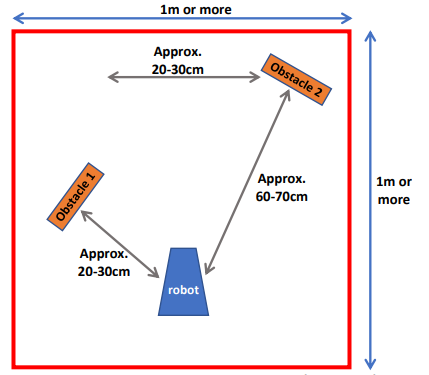

Understand and Incorporate Ultrasound Sensor in our Robot
Combine earlier labs to make a more complex and sophisticated robot
Simulate and demonstrate the robot moving through a maze
Familiarizing Yourself with the Ultrasound Sensor
First, we want to characterize our Ultrasound Sensor. For our tests, we found that there was an accuracy
of about 2 cm. With that in mind, we can code our implementation of the ultrasound sensor to account for this, which we will see in
Demo 1 and 2.
Demo 1
Demo 1 will happen as follows:
Use fourier analysis to plot the spectrum of frequencies played in the demo.
Upon detecting the 550 Hz signal, the robot will
Make 1 rotation that lasts for about 4 seconds
Turn the onboard LED on when detecting an object as seen in the diagram for demo 1
The robot will return to its initial position and wait once more for the 550 Hz signal to repeat the process

Spectrum plot of the frequencies present in the demo

Diagram of the demo space
It is important to note that due to space constraints, the table and the recorder's legs interfered with the demo. This explains the extra LED flickers. Barring that, the demo went as expected.
Execution of demo 1.
Demo 2
Demo 2 will execute as follows:
Starting at the position Start, your robot will be placed in your navigation area as shown in Fig. 3,
relative to the three obstacles. The robot will remain in place, motionless, with its onboard LED
OFF.
You will then lure your robot to its left with a bright light, at which point the onboard LED will turn
OFF and your robot will turn in place and follow your bright light in a straight line headed west
(with the light in front of the robot but at least 15-20cm above the US sensor so as not to block its
view cone – see inset of Fig. 3) over a distance of approximately 30cm.
Following the path as in Fig. 4, you will then lure your robot to its right in the same manner as
above, over a distance of about 30cm headed north towards Obstacle 1. From the moment that
your robot detects Obstacle 1, its onboard LED be ON solid. When your robot will be within 5cm
of Obstacle 1, it will stop moving even though you are trying to lure it into the obstacle, it will
remain in place and its onboard LED will continue to remain ON solid (i.e., not blinking).
You will then shine light to your robot’s left side (from the west) trying to lure your robot but it will
not move. You will then shine light to your robot’s right side, at which point your robot will turn in
place and follow your light, and from this moment its onboard LED will turn OFF and remain OFF.
You will lure your robot approximately along the path shown with the long red arrows (first headed
east, then north, then west). As you will lure your robot in the area between the three obstacles,
when the robot’s US detects Obstacle 2 at a distance of 30cm, its LED be ON solid.
When your robot will be within 5cm of Obstacle 2, it will stop moving and remain in place even
though you are trying to lure it into the obstacle, and its onboard LED will be OFF. At this point,
your robot will be motionless and facing west.
You will then shine your bright light from your robot’s left side (south), trying to lure it to go south
towards Obstacle 1 which it will do by turning in place and its onboard LED be ON solid. Your robot
will stop 5cm away from Obstacle 1, at which point its onboard LED will remain ON. At this point,
your robot will be motionless and facing south.
You will then lure your robot to go north (shining light from either side of your robot), at which
point your robot will turn in place and follow your light, and its onboard LED will be OFF. Your robot
will follow your light as it approaches Obstacle 3.
Your robot will continue to navigate towards Obstacle 3, being lured by your light, until it is 5cm
away from Obstacle 3. At that point, your robot will stop moving, and its onboard LED will remain
ON solid.